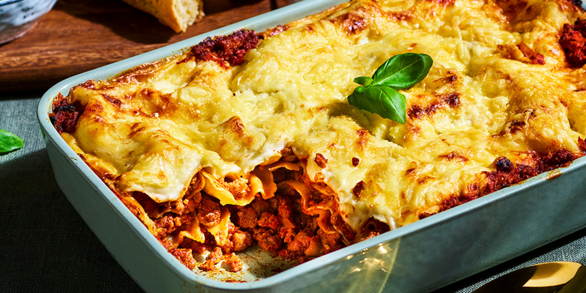

Lasagne (serves 6)
Ingredients:
Beef Ragu
- 1 onion (finely choped)
- 1 medium carrot (diced)
- 1 rib / stick of celery , finely diced
- 2 garlic cloves , minced
- 1 kg / 2 lb beef mince (ground beef) (Note 1)
- 800g / 28 oz crushed tomato
- 1/4 cup tomato paste
- 1 cup (250ml) red wine , bold not light (Note 2)
- 3 beef bouillon cubes , crumbled
- 2 bay leaves , dried or fresh
- 1/2 tsp each dried thyme and oregano
- 2 tsp Worcestershire Sauce
- 1 – 2 tsp sugar (if needed – Note 3)
- 1/2 tsp salt and black pepper
Cheese Sauce (Besciamella)
- 60g / 4 tbsp butter
- 1/2 cup (75g) flour
- 4 cups (1 litre) milk (I use low fat)
-
2 cups (200g) shredded cheese (Colby, Gruyere, Cheddar, Monterey Jack,
OR 1 cup shredded parmesan) (Note 4)
- Pinch of freshly ground nutmeg
- Salt and pepper